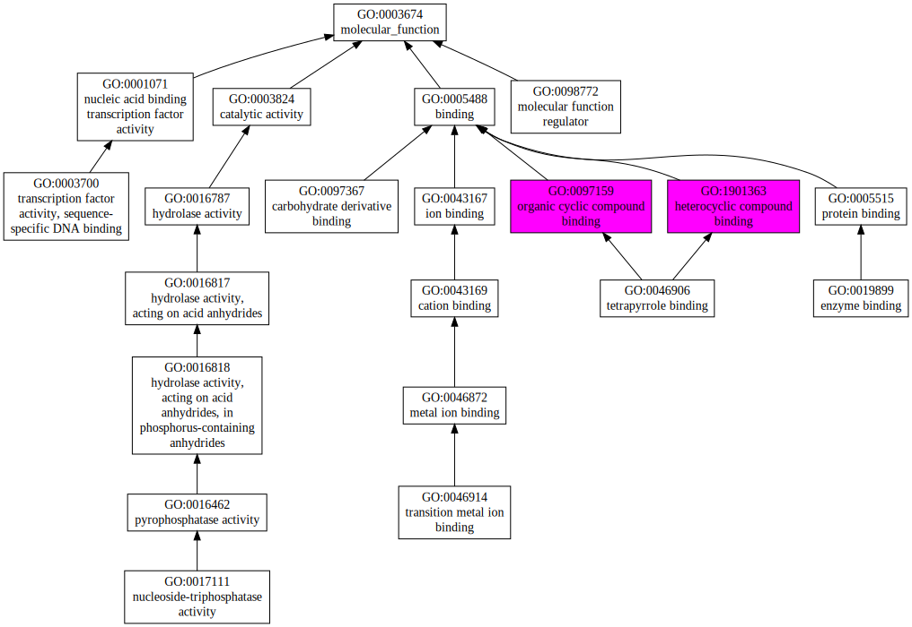
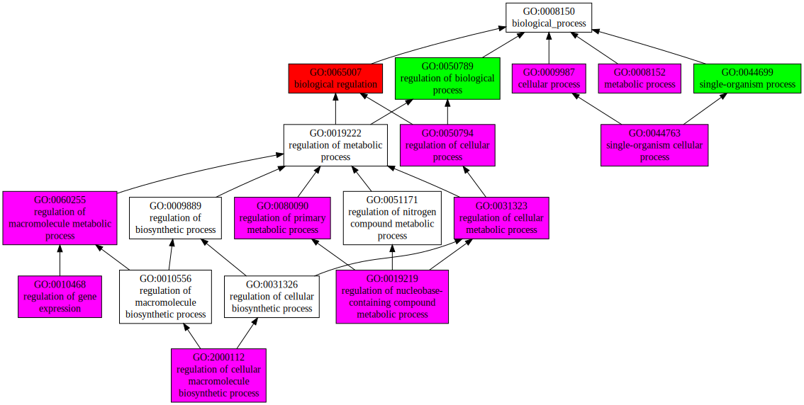
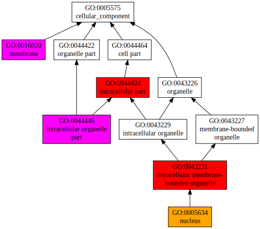

|

|
| Download full result of the above consensus prediction. |
| Click the graph to show a high resolution version. |
| (a) | CscoreGO is the confidence score of predicted GO terms. CscoreGO values range in between [0-1]; where a higher value indicates a better confidence in predicting the function using the template. |
| (b) | The graph shows the predicted terms within the Gene Ontology hierachy for Molecular Function. Confidently predicted terms are color coded by CscoreGO: |
| | [0.13,0.5) | [0.5,0.6) | [0.6,0.7) | [0.7,0.8) | [0.8,0.9) | [0.9,1.0] |
|
|
|

|
| GO term | CscoreGO | Name |
| GO:0065007 | 0.96 | biological regulation |
| GO:0044699 | 0.68 | single-organism process |
| GO:0050789 | 0.67 | regulation of biological process |
| GO:0009987 | 0.40 | cellular process |
| GO:0050794 | 0.37 | regulation of cellular process |
| GO:0019222 | 0.36 | regulation of metabolic process |
| GO:0060255 | 0.34 | regulation of macromolecule metabolic process |
| GO:0008152 | 0.26 | metabolic process |
| GO:0010468 | 0.24 | regulation of gene expression |
| GO:0080090 | 0.14 | regulation of primary metabolic process |
| GO:0031323 | 0.14 | regulation of cellular metabolic process |
| GO:0044763 | 0.11 | single-organism cellular process |
| GO:2000112 | 0.09 | regulation of cellular macromolecule biosynthetic process |
| GO:0019219 | 0.09 | regulation of nucleobase-containing compound metabolic process |
| Download full result of the above consensus prediction. |
| Click the graph to show a high resolution version. |
| (a) | CscoreGO is the confidence score of predicted GO terms. CscoreGO values range in between [0-1]; where a higher value indicates a better confidence in predicting the function using the template. |
| (b) | The graph shows the predicted terms within the Gene Ontology hierachy for Biological Process. Confidently predicted terms are color coded by CscoreGO: |
| | [0.08,0.5) | [0.5,0.6) | [0.6,0.7) | [0.7,0.8) | [0.8,0.9) | [0.9,1.0] |
|
|
|

|
| Download full result of the above consensus prediction. |
| Click the graph to show a high resolution version. |
| (a) | CscoreGO is the confidence score of predicted GO terms. CscoreGO values range in between [0-1]; where a higher value indicates a better confidence in predicting the function using the template. |
| (b) | The graph shows the predicted terms within the Gene Ontology hierachy for Cellular Component. Confidently predicted terms are color coded by CscoreGO: |
| | [0.14,0.5) | [0.5,0.6) | [0.6,0.7) | [0.7,0.8) | [0.8,0.9) | [0.9,1.0] |
|
|
|